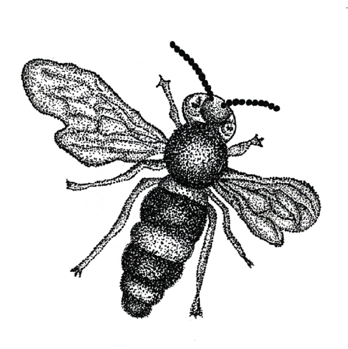
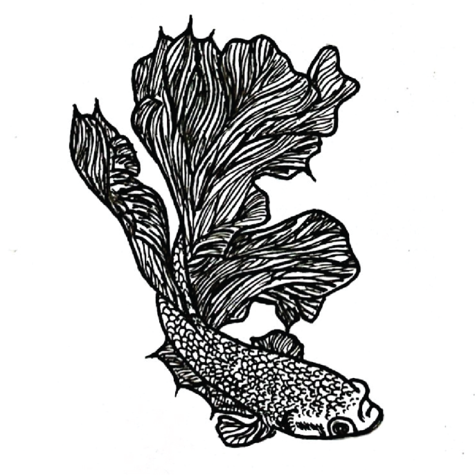
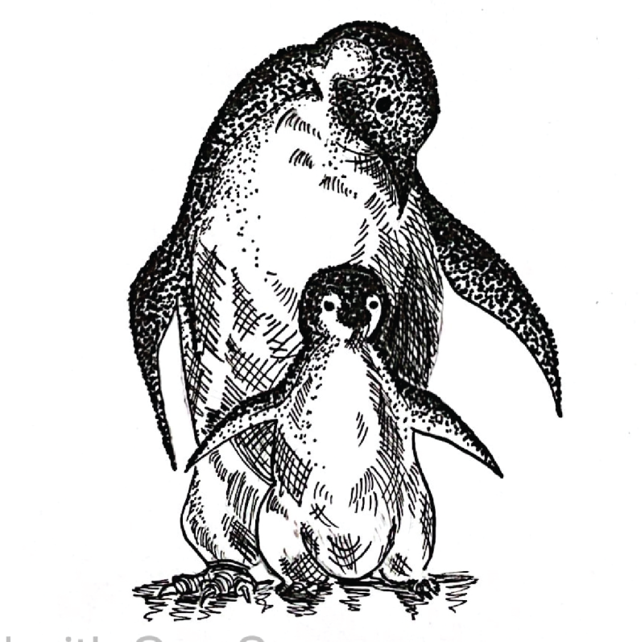
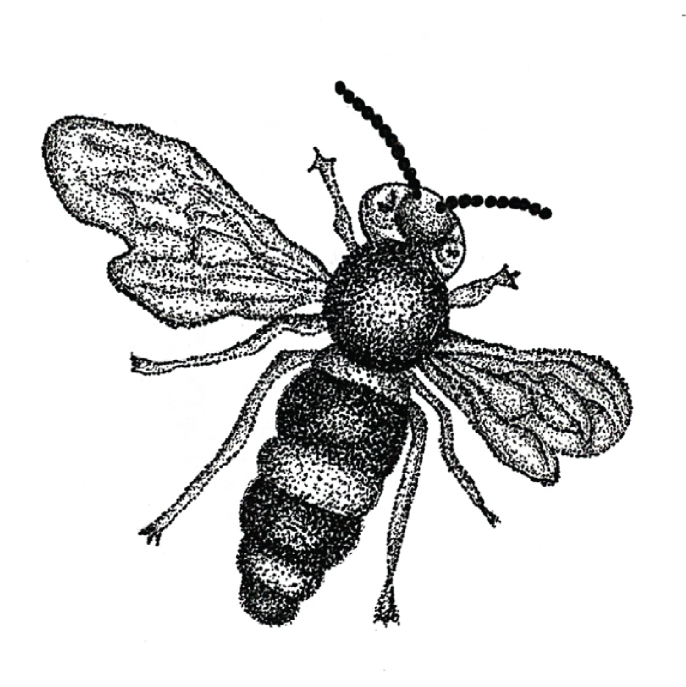
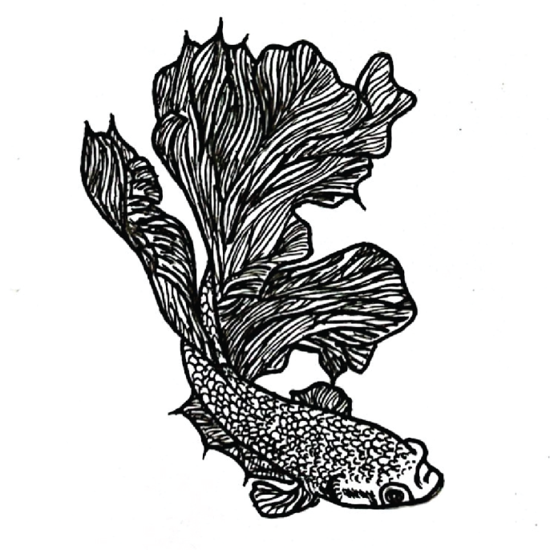
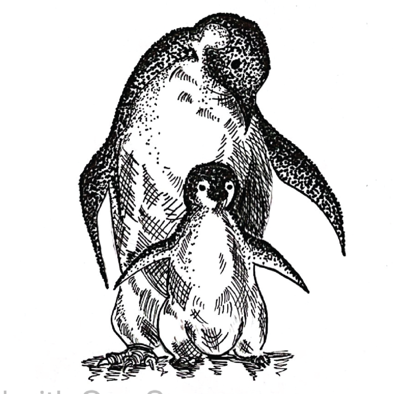

These series artwork were drawn in 2022 in my design fundamentals class. The topic for these artwork are DOTS & LINES so I drew objects that are made out of dots and lines. The Bee was inspired by a picture of a bee. When I was scrolling through Pinterest I thought that bees have a hairy texture on them and that would go great with dots. For the second one , I use line for this artwork and the reason why I choose to draw a Betta fish is because the breed veil tail in the Betta fish family has long tail and beautiful fish scale pattern that i can go creative with.For the last one, I used both dots and lines for it. I drew two penguins that I got reference from a tissue brand I always use and have penguins on the cover of it.